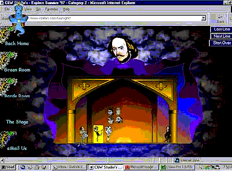
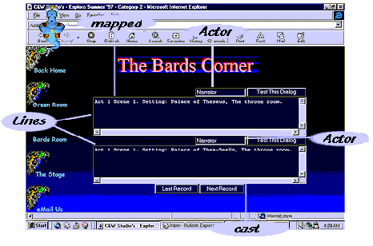
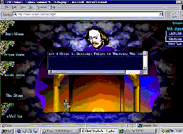
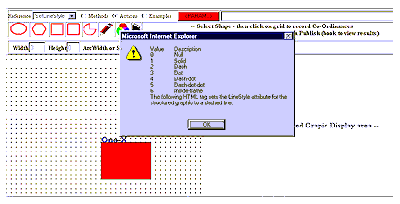
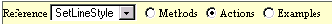
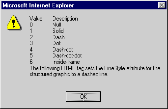

|
| ||
|
| ||
D. Wayne Ruehling
Webmaster, Clallam WebSite Services
November 12, 1997
Contents
Introduction
Why Use the TDC?
A Little Background on the TDC
Specific Application of the TDC
Meet the Code
HTML Code for the Form in the Bard's Room
HTML Code for the Stage
Using the TDC for Random Access
Conclusion
About the author
About the IE-HTML contests
When the Internet Explorer HTML Summer '97 contest was announced, the theme suggested for entries was William Shakespeare's play A Midsummer Night's Dream. Since I have had experience using the Microsoft® Agent control for Text-to-Speech (TTS), I decided to "perform" the play or, more accurately, allow visitors to perform and direct it. I used Microsoft Agent to speak the lines of the play, and animation scripting to guide the actors on and off "stage" on cue. To allow client-side control, I needed an efficient way to download Shakespeare's often-lengthy text.
Thanks to a new control Microsoft introduced in Internet Explorer 4.0, developers now have a simple, elegant solution to the problem of reading, parsing, and utilizing ASCII data files: the Tabular Data Control (TDC).
File access via standard HTML code has always been tedious at best. To deliver large amounts of repetitious data to a client, it was often necessary to use custom controls, CGI scripts, Java applets, and the like. Not only were these methods often cumbersome to implement, they also presented a throughput burden for the server. Using TDC, data can be downloaded to the client's machine quickly and easily, and from there referenced (and manipulated) by the client as needed.
Given the sophisticated audience for the contest, I really wanted my site to be interactive and dynamic. I also set myself a goal not to use any third-party add-ins, plug-ins, or Java applets. Rather, I wanted to create a "pure" site that used only components that shipped with Internet Explorer 4.0.
I ended up using many features of Internet Explorer 4.0, but to give site visitors the ability to modify the play dynamically, I relied heavily on the TDC. This was especially important due to the volume of text lines in Act I, Scene I alone. Each line had to be presented in three separate styles (how it reads, how it sounds, and the action that takes place), resulting in about 3,000 lines. Handling this requirement any other way would have meant creating a custom program, which would have involved dealing with a third-party vendor, code signing, additional control downloading time, and any associated maintenance for the control and its source. All of the latter I really wanted to avoid -- after all, I wanted to enjoy myself in the creation of this site.

Figure 1. Play in progress: Theseus speaking using the Microsoft Agent control
Three areas of the contest site use the TDC. The first is the Stage (shown above), where the play is presented. The second is the Bard's Room, where you can modify any line in the play to your heart's content. Finally, although not part of the theatrical production itself, I also included a page for the Structured Graphics Control reference file, which uses the TDC to access records "randomly".
I found the TDC to be a boon for dynamically displaying, sorting, and filtering static data in the tables of Web pages. I wanted to use this control to process data on a record-by-record basis, and in turn have the data (to some degree) control the document.
In the remainder of the article I will show how, by using the file access methods available through the TDC, the contents of files can be modified by the visitor as well as the designer, making it easier for me and more enjoyable for the visitor.
One of the key features of TDC is that once data files have been loaded from a Web site to a client's machine, you can use it to allow the client to modify the contents of that data. All references to the file after it has been cached are local, so what the client modifies is what the client gets, and any data on the server remains unaffected. While the TDC might not be advisable for use in sales or inventory tracking applications, it might be just the ticket for quasi-persistent user interactive play (excuse the pun).
The TDC allows for two basic file access methods that can be used directly via Microsoft JScript™ or Visual Basic® Script. The native file access methods are:
In addition, you can easily build upon these two methods to access data in a scripting environment. Since records may be retrieved both sequentially and randomly from the file, several hybrid access methods are possible. One such method would be Keyed Random Access, where a second file or double-dimensional array contains keys and associated record numbers. You first find the key you need, and then read the indicated record by its positional record number.
There are many features that are available in the TDC. Most of these are well documented in the Workshop, such as how to use the TDC to create tables that load, sort, and filter ASCII data files with few coding requirements. What has not yet been fully documented are: a practical application for accessing data on a record-by-record basis, processing temporary updates of files read in by the TDC, or enabling random access to those records. These are the features of the TDC that I required, and which this article will explain.
I used the TDC to:
My Summer '97 site  uses three ASCII files to control:
uses three ASCII files to control:
The TDC Director object acts as the stage director, controlling the sequence of events within the play.
<OBJECT ID="Director" BORDER=0 "WIDTH=0" HEIGHT="0" CLASSID="clsid:333C7BC4-460F-11D0-BC04-0080C7055A83"> <PARAM NAME="DataURL" VALUE="direction1.txt"> <PARAM NAME="FieldDelim" VALUE="~"> <PARAM NAME="UseHeader" VALUE="True"> </OBJECT>
The following excerpt from the Director object file (direction1.txt) shows that the file consists of a record for every line or action of the play:
a~b~c~d
0~Narrator~Enter~Narrator
0~Narrator~Enter~Theseus,Hippolyta,Philostrate,Attendant
1~Theseus~Speak~Hippolyta
2~Hippolyta~Speak~Theseus
Each record is composed of four fields:
a The Index to an array of the characters.
b Character who is doing the direction.
c Action needing to happen (Enter, Exit, or Speak).
d Whom the action involves.
The Cast object file is modifiable by the client, and holds the actual Text-to-Speech lines the viewers hears during the play. The contents can be modified by the client to modify phonetic characteristics (to improve speech clarity, for example):
<OBJECT ID="cast" BORDER="0" WIDTH="0" HEIGHT="0" CLASSID="clsid:333C7BC4-460F-11D0-BC04-0080C7055A83"> <PARAM NAME="DataURL" VALUE="a1s1s1.txt"> <PARAM NAME="FieldDelim" VALUE="~"> <PARAM NAME="RowDelim" VALUE="%"> <PARAM NAME="UseHeader" VALUE="True"> </OBJECT>
The following excerpt from the Cast object file (a2s1s1.txt) shows that each record contains two fields (delimited by a "~"), Actors and Lines. The "%" character delimits the records. Note the unusual spelling and punctuation, used to accentuate phonetics in the Text-To-Speech engine of the Microsoft Agent. The first record contains the field headers.
Actors~Lines %Narrator~Act 1 Scene 1. Setting: Palace of Thea-SeeUs, The throne room. %Narrator~Enter: Thea-SeeUs, Hippolitah, Philostrate, and Attendants %Thea-SeeUs~Now, fair Hippolitah, our nuptial hour Draws on apace. four happy days bring in another moon. But-Oh-mE-thinks-how-slow-this-old-moon-wanes.
The Mapped object is used when the play is presented in silent-theater mode. Silent-theater mode displays the lines of the play rather than having them read by the Microsoft Agent control.
<OBJECT ID="mapped" BORDER="0" WIDTH="0" HEIGHT="0" CLASSID="clsid:333C7BC4-460F-11D0-BC04-0080C7055A83"> <PARAM NAME="DataURL" VALUE="a1s1m.txt"> <PARAM NAME="FieldDelim" VALUE="~"> <PARAM NAME="RowDelim" VALUE="%"> <PARAM NAME="UseHeader" VALUE="True"> </OBJECT>
The Mapped object file (a1s1m.txt) is identical to the Cast object file save for two exceptions: first, the text is not altered for phonetics (the text will be displayed, not read), and, second, a dummy record is inserted at the beginning of the file (note the "%%" on second line) to synchronize the play with the proper actor.
Actors~Lines%Narrator~Act 1 Scene 1. Setting: Palace of Theseus, The throne room. %%NARRATOR~Enter: Theseus, Hippolyta, Philostrate, and Attendants %THESEUS~Now, fair Hippolyta, our nuptial hour Draws on apace; four happy days bring in Another moon: but, O, methinks, how slow This old moon wanes!
This section presents all the script for traversing the three files. The amount of code is minimal -- a mere 14 lines for general record handling, and an additional 12 lines to keep the mapped file (with the extra dummy record) synchronized.
Here is one of the two common scripts used to process the onClick events for record processing, in both the Bard's Room and the Stage:
<SCRIPT language="vbscript">
<!--
Function forward_onclick()
If cast.recordset.AbsolutePosition <>
cast.recordset.RecordCount Then
cast.recordset.MoveNext
Director.recordset.MoveNext
mapped.recordset.MoveNext
else
msgbox "Already at last element"
End If
' Bypass blank record if in the Bards Room
If InBardsRoom Then
If document.TheCast.lmap1.value="" Then
mapped.recordset.MoveNext
End If
End If
End Function-->
</SCRIPT>
The function forward_onclick is triggered when the client clicks the "next line" button in the Bard's Room or the Stage. The "next line" button has an ID of "forward", and is connected to the forward_onclick routine via the onClick event. If the files are already on the last record (tested by comparing the current record (AbsolutePosition) to the total number of records in the file (RecordCount)), an error message is displayed; otherwise all three files are incremented (MoveNext) to process the next record. The concluding "If" statement forces a bypass of the synchronizing dummy record in the Mapped object file.
The backward_onclick function decrements all three files by one record (MovePrevious); otherwise it is identical to the forward_onclick function.

Figure 2. The Bard's Room
In the Bard's Room, the client can select the lines to be modified, enter the changes, and then test how the Microsoft Agent sounds when the lines are spoken. The actual reference to the appropriate data file is quite simple:
<INPUT NAME=amap1 id=symbol TYPE=text STYLE="color:cornsilk;background:midnightblue" DATAsrc=#mapped DATAFLD="Actors" SIZE=16>
DATASRC indicates the file, and DATAFLD is the specific field within the current record of that file. Changes input here by the visitor automatically replace the original text. The form definition also contains the buttons that trigger movement within the file:
<INPUT TYPE=BUTTON ID=forward VALUE="Next Record"
STYLE="color:cornsilk;background:navy">
Both the Mapped and Cast object files are shown on this page. The Director object file records are not shown, but are referenced within the form so they will stay in sync with the other two files:
<INPUT TYPE=HIDDEN NAME=CA TYPE=TEXT DATAsrc=#director DATAFLD="a">
Figure 1 at the beginning of this article shows the Stage with the play in progress, and the Microsoft Agent speaking the lines. The actor speaking is highlighted with a yellow background (a spotlight).

Figure 3. The Stage, silent mode
In silent-theater mode (Figure 3), the Microsoft Agent is not on the set, although there is a button provided (upper right corner) to allow the client to initiate the Agent. The lines of the play are displayed in the text box.
The images of the actors are displayed in position.
<IMG NAME=Theseus ID=Theseus Class=IMG1 src=astaire.gif STYLE="top:330;left:170;visibility:hidden" LANGUAGE=javascript onClick="Star(1,this.id)">
An Enter command from the Director object file will change the visibility status of an actor to a null string (making it visible), Exit will cause an actor to disappear, and Speak will activate the spotlight effect.
The Star() function gets passed the absolute value of the characters (for the Image array and the image tag's ID) so a common script can highlight them when they speak. This function is used in conjunction with the Green Room, so I would suggest visiting the site and examining the code, since several routines are involved that use both VBScript and JScript. (A full description is beyond the scope of this article.)
As in the Bard's Room, text is displayed from the Mapped object file
<TEXTAREA NAME=NOA ID=NOA TYPE=TEXT DATAsrc=#mapped DATAFLD="Lines" STYLE="color:cornsilk;background:midnightblue;visibility:shown" COLS=50 ROWS=5> </TEXTAREA>
An array holds the Speech output tags for each character in the play. The Shakespeare character, who stands offstage a bit, narrates. When the user clicks the test button, the appropriate character's line is concatenated with their Speech Output Tag, so the actual character's voice is heard speaking the lines. Here is a simplified sequence showing the Microsoft Agent default Speech Output tag used for Theseus:
'\\pit=175\\\\spd=150\\\\chr="Normal"\\\\Vol=38000\
pit sets the pitch of the voice, spd sets words spoken per minute, chr give the characteristics of the voice, and vol sets its volume. Each of these can be modified in the Green Room.
The line to be spoken is appended to the Speech Output tag of the speaker, the background of the speaker's image is changed to yellow (the spotlight), and the Text-to-Speech Engine is called to produce the actual sound. For detailed information on the code, visit the site.
For those of you interested in another way to use the Tabular Data Control, we need to leave the play and venture into another application  I developed. This application uses the TDC in random-access (rather than sequential) mode. It is based on the Structured Graphics Control, another control delivered with Internet Explorer 4.0.
I developed. This application uses the TDC in random-access (rather than sequential) mode. It is based on the Structured Graphics Control, another control delivered with Internet Explorer 4.0.
The Structured Graphics Control is a tool for generating and displaying vector graphics. Unlike bitmapped graphics, such as GIF or JPG, which are composed of actual pixels, vector graphics allow you to use formulas to inform a graphic control/program how and where to draw. For a simple design element such as a rectangle, the only code required would be something like this:
rect(startx,starty,endx,endy)
Regardless of how large this rectangle needs to be, the size of code to describe it is constant. The large bust of Shakespeare shown at the entry page to my site was created with the Structured Graphics Control (although it was slightly more complex, using over 95 parameters).
My application  uses the Structured Graphics Control and the Tabular Data Control to allow site visitors to create their own drawings using a set of graphic primitives. Figure 4 shows the base application and an active dialog box concerning a specific drawing option.
uses the Structured Graphics Control and the Tabular Data Control to allow site visitors to create their own drawings using a set of graphic primitives. Figure 4 shows the base application and an active dialog box concerning a specific drawing option.

Figure 4. Structured Graphics Control application
What follows is a set of code segments and screen shots that demonstrate how a reference file that outlines a set of commands executable by the Structured Graphics Control can be accessed and manipulated (via the TDC) by a visitor to the site.
First, the Structured Graphics Control reference file (SGM1.txt) is declared an OBJECT. Note that no additional coding (compared with the object declaration for the play) is required to allow random access.
<OBJECT ID=SGM1 CLASSID="clsid:333C7BC4-460F-11D0-BC04-0080C7055A83"
HEIGHT='2px'>
<PARAM NAME="DataURL" VALUE="SGM1.txt">
<PARAM NAME="RowDelim" VALUE="^">
<PARAM NAME="UseHeader" VALUE="True">
<PARAM NAME="FieldDelim" VALUE="~">
</OBJECT>
The records of the reference file are delimited by a carat (^) and consist of four fields delimited by a tilde (~). Record 1 is a header describing the fields. The data starts on record 2. The following table shows the first three records of this file:
| Xref | ~Methods | ~Actions | ~Examples^ |
| 00 | ~Arc(x, y, width, eight,
startAngle, arcAngle, rotation) |
~This example draws a 35-degree arc, starting from the upper left corner of the page. | ~"Arc(0,0, 10,15, 15,35, 0)"> |
| 14 | ~SetLineStyle(style) | ~Value Description
0 Null 1 Solid 2 Dash 3 Dot 4 Dash-dot 5 Dash-dot-dot 6 Inside-frame The following HTML tag sets the LineStyle attribute for the structured graphic to a dashed line. |
~"SetLineStyle(2)"> |
Figure 5 shows the SetLineStyle Reference with the Actions option selected.

Figure 5. Drawing method selection menu
Figure 6 displays a dialog box that results when the parameters in the drawing method selection menu are changed and the Actions option button is selected. Note that the dialog box matches the contents of the Actions field of the SetLineStyle record shown in the reference file. The dialog box display relied on using the TDC to "randomly" access the Structured Graphics Control reference file.

Figure 6. Dialog box displaying Action options for SetLineStyle method
The drop-down menu options are declared and enumerated using the Select declaration, with each method assigned an index value:
<Select name="WhatMethod" size="1">
<option>SGS Control
<option>- Methods -
<option value="1">Arc
<option value="2">FillSpline
<option value="3">Oval
... etc ...
</select>
The VBScript subroutine WhatMethod_onChange() allows you to retain the index of the desired item in the drop-down menu when it changes from the default value (in this case "1"):
<SCRIPT LANGUAGE="VBScript">
<!--
Sub WhatMethod_onChange()
vSI=ds.WhatMethod.selectedIndex
ds.WhatMethod.options(vSI).selected=true
if vSI > 1 then
MatchRecord(vSI)
End If
End Sub
The selected method is then matched with its associated record from the reference file:
Function MatchRecord(pstring) SGM1.recordset.AbsolutePosition=ds.WhatMethod.options(pstring).value ds.WhatMethod.options(pstring).selected=true End Function
As you can see from the above example, random access has been made extremely simple using the Tabular Data Control.
Using the methods described above, you should have no trouble applying the Tabular Data Control to your own Web site. It is perfect for handling large ASCII type files, either in sequential or random-access mode. As this article has just shown, the trickier parts of record handling (positioning, file opening, closing, etc.) normally associated with programming file I/O are all performed automatically with the TDC.
Additional information on TDC can be found in the table of contents listing on the left.
D. Wayne Ruehling has a strong computer background, with 25 years of mainframe and micro experience in a corporate environment, and ten years of computer graphics programming and desktop publishing. He is currently the owner and Webmaster of Clallam WebSite Services in Sequim, Washington.
The author would also like to extend a special thanks to Heidi Housten for her invaluable editing advice.
The members of our public IE-HTML mailing list have held a series of contests to demonstrate their ability to create exciting and effective Web sites using features of Internet Explorer. Members create special sites for each contest, and the list membership votes for their favorite sites. Members enter these contests primarily for the fun of demonstrating what they have learned, in the spirit exhibited in the normal daily mailing list discussions. However, winners do receive prizes contributed by list members and anonymous donors. These contests are run by the list members, and are not sponsored by Microsoft. Occasionally MSDN Online will invite contest winners to submit articles describing particularly innovative aspects of their sites.
Did you find this material useful? Gripes? Compliments? Suggestions for other articles? Write us!
© 1999 Microsoft Corporation. All rights reserved. Terms of use.